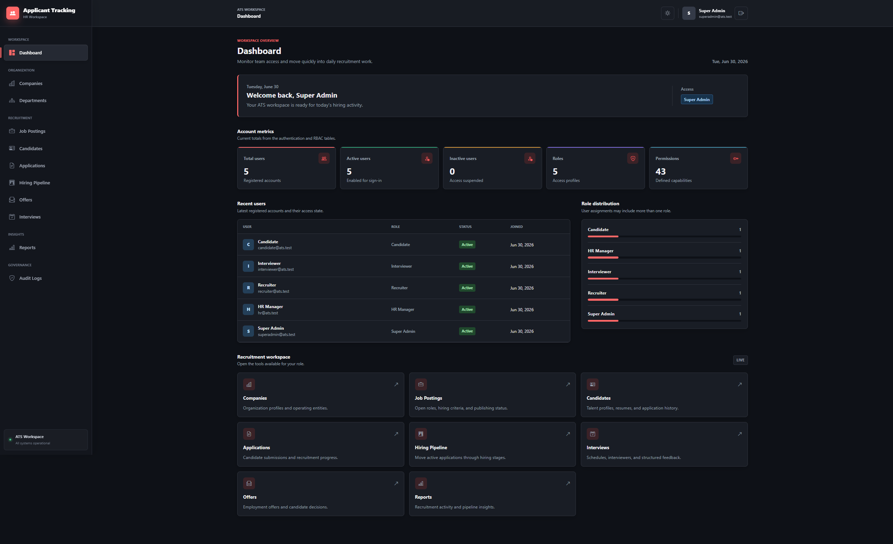
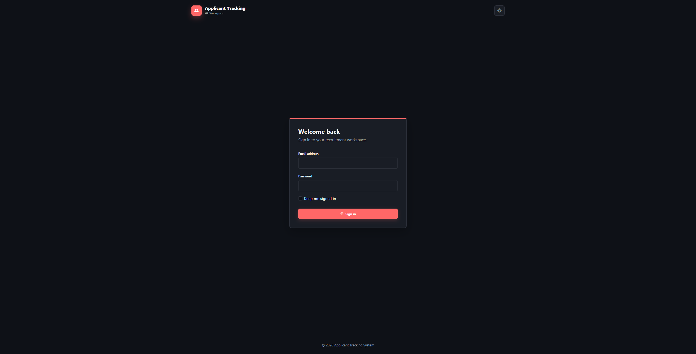

Authentication
Active-user login and logout, intended-route redirects, login throttling, and Gate-based authorization.
Applicant Tracking System · Portfolio Project
Production-style Applicant Tracking System built with Laravel 12, featuring job postings, candidate profiles, application tracking, interview workflows, reports, RBAC, and audit-ready recruitment management.
Static portfolio page only — the Laravel application itself is not hosted here.
The project models a practical recruitment workflow from organization setup and job publishing through candidate evaluation, pipeline movement, interviews, offers, reporting, and audit history. It demonstrates production-style Laravel architecture and engineering practice as a local portfolio and demonstration application, not a claim of a hosted production SaaS service.
Recruitment workflow modules implemented in the application.
Active-user login and logout, intended-route redirects, login throttling, and Gate-based authorization.
Seeded role/permission matrix, Gate registration, and a Super Admin Gate-level bypass.
Authenticated overview of users, active/inactive accounts, roles, permissions, and role distribution.
Company and department assignments, compensation ranges, publishing states, filters, and soft deletes.
Internal candidate profiles, contact and professional details, availability and source filters.
Private PDF, DOC, and DOCX uploads, primary-resume handling, and permission-controlled downloads.
Candidate-to-job applications with duplicate-active-application protection and status tracking.
Scheduling for eligible applications, active interviewer validation, updates, and cancellation.
Board-style pipeline with controlled stage transitions, transition notes, and stage history.
Role-scoped day-to-day recruitment operations from job posting through offers.
Application, candidate, job posting, interview, pipeline, and offer summaries with CSV exports.
Filterable activity history with before/after snapshots and sensitive-value redaction.
150 automated feature tests covering authorization, workflows, exports, and page rendering.
A conventional, service-oriented Laravel structure.
The MySQL schema is documented as a design contract covering users, roles, permissions, organizations, jobs, candidates, applications, interviews, offers, and audit records.
Latest verified project status at the end of the Testing / Quality Review scope.
Coverage includes authentication, throttling, inactive users, permissions, CRUD workflows, soft deletes, private resume handling, pipeline and offer transitions, interview rules, queued notifications, report/audit exports, filtering, and protected admin page rendering.
Recruitment reports support validated filters across company, department, job, candidate, application, interview, pipeline, and offer data. CSV downloads are streamed with spreadsheet-formula injection protection. Audit exports carry timestamps, actors, actions, and sanitized summaries, with sensitive values redacted in stored snapshots.

